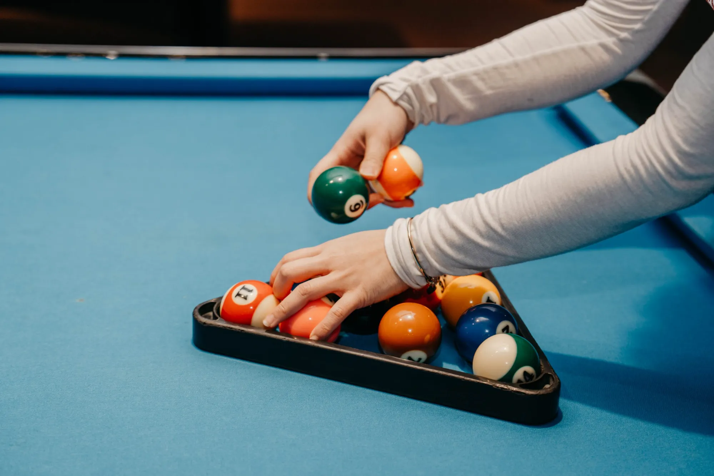

Poolen
8-ball of 9-ball, welk spel kom jij spelen in Rijswijk of Delft?
Kom je een avondje gezellig poolen met je maten, een drankje en een bitterbal erbij? Of wil je je skills laten zien op een van onze toernooien in Delft? Het kan bij ons allemaal, 7 dagen per week.
€ 17,50 per uur. Nog bezig met een potje? Je betaalt per minuut.